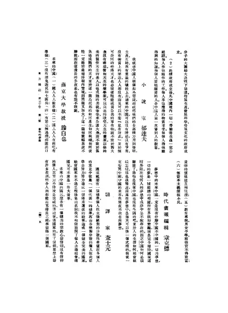

新年的夢想：夢想中的未來中國、夢想中的個人生活
访问原网页 ↗Visit original website ↗

S085 · 滕白也 / 《東方雜誌》 · 1933-01-01，30卷1期，专题页5、60
两处以燕京大学教授身份署名。第一则分项谈民生、生产及平等，第二则表述希望人人有饭吃，并谈自己依靠动手生活。Two signed responses identify Teng as a Yenching University professor. One addresses livelihood, production and equality; the second connects food for all with his own work by hand. Original scan pp. 304 and 359.
馆藏图像与原文Archived images and documents
- 滕白也答《新年的梦想》，专题页5Signed New Year survey response, section p. 5 I062
- 滕白也答《新年的梦想》，专题页60Signed New Year survey response, section p. 60 I063
- 新年的梦想，封面、目录及滕白也两则答复Eastern Miscellany, 1933: cover, contents and both signed responses D006


原始网址Original URL
https://commons.wikimedia.org/wiki/File:NLC404-01J002290-26140_%E6%9D%B1%E6%96%B9%E9%9B%9C%E8%AA%8C_1933%E5%B9%B430%E5%8D%B71%E6%9C%9F.pdf